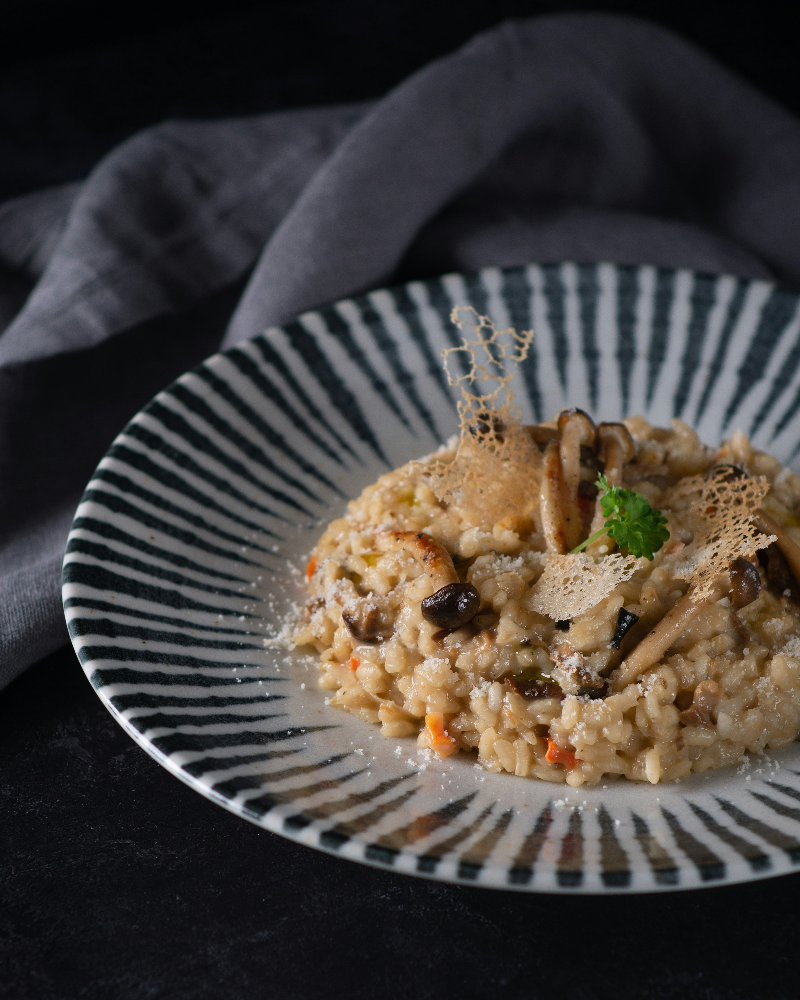

Home
Mushroom Risotto

Photo by
Max Griss
on
Unsplash
Description
This dish is special to me because it is something that my grandma and mom
used to make together. I've found a fascination with making meals that my
mom made growing up. I really hope that you enjoy this one as much as I
do!
This dish is best enjoyed during the fall and winter seasons. The
creaminess of the pasta and aroma of herbs with the flavor of some good
mushrooms is such a joy. I like to make this when I am having a nice
evening in and watching a movie.
Ingredients
- Butter
- Broth
- Onion
- Garlic
- Mushrooms
- Thyme
- Arborio Rice
- White Wine
- Parmesan
- Peas
- Parsley
- Bay Leaves
- Salt
- Pepper
Steps
- Get the broth simmering and use low heat to keep it warm.
-
Using a large pot first cook the onions. Then add the garlic, mushrooms,
bay leaves, and thyme. Cook until the onions are soft and turning brown.
Season with salt and peper to taste then add to a medium bowl.
-
Use the same bowl and coat it with some butter to cook the rice for a
few minutes. Add the wine and keep stiring until absorbed.
-
Add a cup of the broth and stir until absorbed. Do this again one cup at
a time until the risotto is creamy.
-
Add everything into the mixture. Also include the parmesan and peas. Top
with parsley.